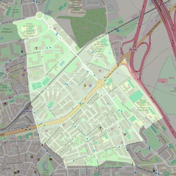

Divino Pastor
- Arciprestazgo
- Móstoles
- Población
- Móstoles
- Dirección postal
- Avda. Cerro Prieto, 34
- Código postal
- 28931
- Extensión
- 1,10 km² (110 ha)
- Teléfono
- 916 146 804
- Correo electrónico
- divinopastor-mostoles@diocesisgetafe.es


Descargar mapaLímites según decreto
" Partiendo de la confluencia de la Avenida de la Constitución (antes Generalísimo) con la calle de San Marcial, siguen por el eje de esta última y de la Travesía de Leganés y por la calle Camino de Leganés hasta la calle de la Libertad; siguen por el eje de la calle de la Libertad hasta la Avenida de Barcelona; siguen por el eje de la Avenida de Barcelona y, atravesando la Avenida de la ONU, continúan por el eje de la calle Burdeos, y de aquí en línea imaginaria hasta el término municipal de Alcorcón, siguiendo por dicho término hasta un punto continuación del Paseo de Goya y por el Pase de Goya hasta la Avenida de la Constitución en su confluencia con la calle de San Marcial, punto de partida" (Decreto de rectificación de límites de 12-9-84